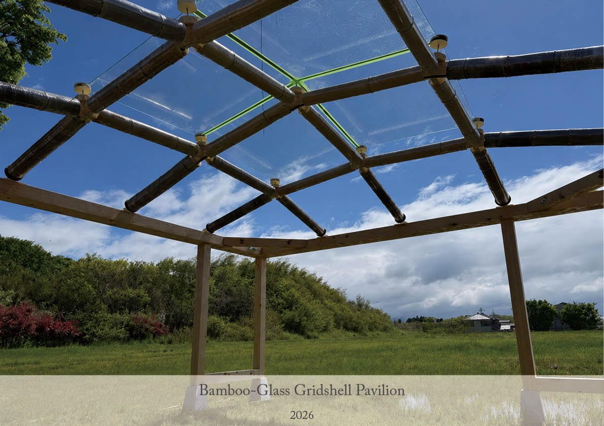
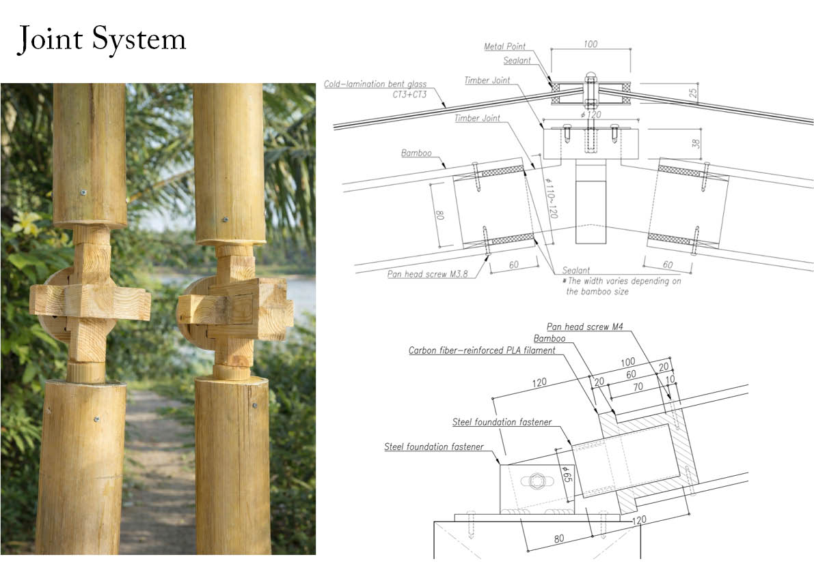
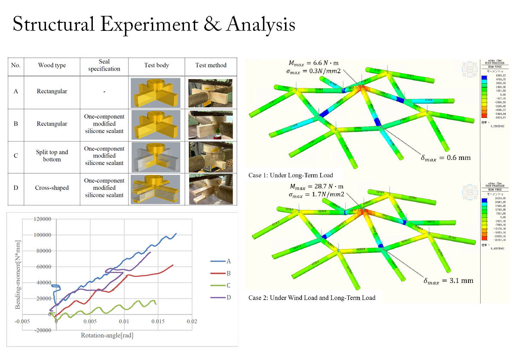

本研究では、再生可能な天然材料である孟宗竹を主要構造材とし、ガラスを外装材として用いた竹ラチスシェル構造を提案した。天然竹は優れた力学性能を有する一方で、寸法のばらつきが大きく、高精度な建築への適用が課題となっている。そこで本研究では、CNC加工による木製ジョイントと3Dプリント部材を組み合わせることで、竹の個体差を吸収しながら、高い施工精度と構造性能を両立する接合システムを開発した。また、ガラスにはコールドラミネーション曲げガラスを採用し、竹・木・ガラスを一体化した軽量な曲面シェル構造を実現した。 提案工法の有効性を検証するため、平面寸法4m×4mの実大モックアップを製作した。竹材はすべて内径を実測し、それぞれに対応した専用の木製ジョイントおよび3Dプリント接続部材を製作することで、天然材料特有の寸法誤差に対応している。ジョイント部には変成シリコーンシーリング材とビスを併用し、従来のピン接合に近い挙動から曲げモーメントを伝達できる剛性の高い接合へと改良した。さらに、1m角の曲げ合わせガラスをMPG金物で支持し、竹構造とガラス外装を統合したシェルシステムを構築した。 施工では、位置決め治具や3Dプリント治具を活用して複雑な三次元形状を高精度に再現するとともに、地組みによるユニット施工を採用することで、安全性と施工性を向上させた。接合部の曲げ実験、構造解析、実大施工を通じて、提案システムが十分な構造性能と施工性を有することを確認するとともに、デジタルファブリケーションを活用することで、天然材料の寸法ばらつきと建築に求められる高い施工精度を両立できることを実証した。
project
Bamboo-Glass Gridshell Pavilion
term
Nov. 2025 - Apr. 2026
type
Pavilion
credit
Hiroki Awaji, Nagai Lab, Yuya Yokoyama, Nanami Iribe, Kazunori Nakayama